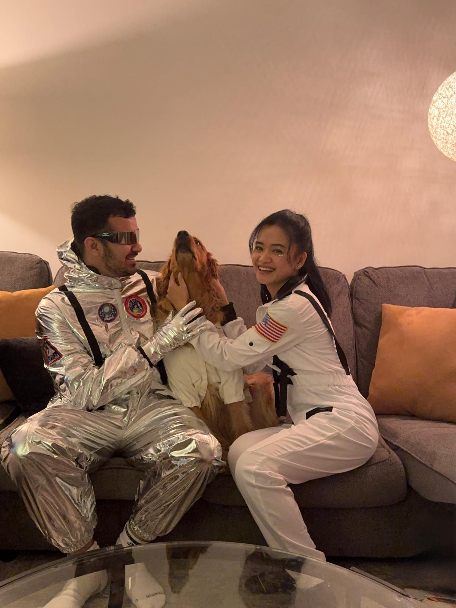
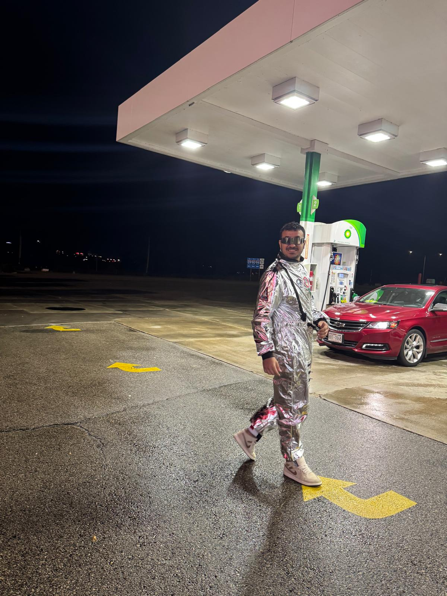
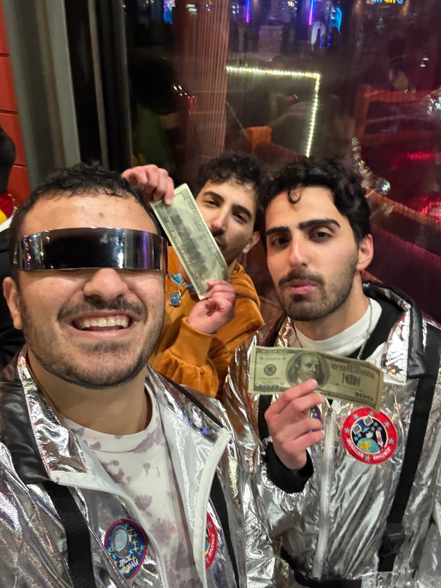

We Lived the Halloween Spirit Like Astronauts
Halloween is one of my favorite times of the year because it turns a normal night into a story. This year, my friends and I went all-in with an astronaut theme and treated the night like our own little space mission.
We put on the suits, took photos, laughed nonstop, and just enjoyed the moment together. The best part was that my dog joined the adventure too. It felt like we had a small crew member with us for the “space journey.”
We kept the night simple and fun. We drove around, stopped for snacks, took more pictures, and made memories that felt completely different from a regular weekend. Even small moments like walking outside in the suits and getting reactions from people made the night unforgettable.
Looking back at these photos, I love how the night captures friendship, creativity, and the whole Halloween spirit. It was not just a costume night, it was a memory I will always keep.